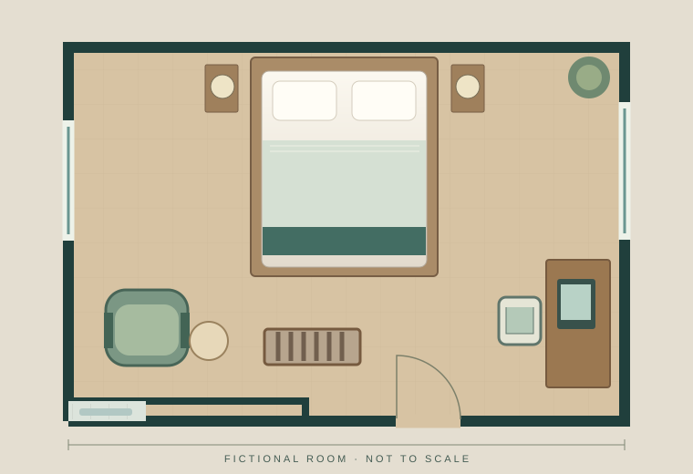

The room and listing
Same room, six image slots, edit treatment, price, policies, copy and layout. Both galleries must be realistic choices.
PROPOSED STUDY · PROTOCOL v0.2
Does showing more useful room features help travelers identify them accurately?
A comparison of two galleries of the same room: broader and narrower feature coverage, with photographic treatment held constant.
01 / STUDY DESIGN
A gallery can look convincing while leaving useful questions unanswered. This study would test whether broader feature coverage increases the number of room facts people can identify.
Same room, six image slots, edit treatment, price, policies, copy and layout. Both galleries must be realistic choices.
Randomly assign one gallery. Ask six factual questions while it remains visible. Report the difference between groups.
A positive result would concern these gallery packages. It would not establish the value of professional photography across hotels, or predict purchases.
02 / INITIAL LITERATURE REVIEW
Six publications motivate the question. This purposive review does not establish novelty or supply a pooled effect estimate.
Intentions and appeal: experimental and survey studies examine how images affect evaluations and stated choices.
Attention: eye tracking describes what people inspect, without establishing factual understanding.
Booking proxy: one observational study uses a hotel-level booking badge, not image-level conversion or revenue.
The matrix separates identifiable studies and marks unextracted information. Independent extraction review and missing full texts remain pending. Targeted search log and screening decisions ↗
03 / INTERFACE DEMO
This fictional drawing demonstrates the questions and response categories. It cannot test the effect of hotel photography.

DRAWING / NOT A HOTEL PHOTO04 / METHODS
The outcome is identified facts, not judgment quality. A correct guess can score; justified uncertainty must remain visible.
The primary count is correctly identified facts out of six. Wrong assertions and “cannot tell” both add no identified fact, but are reported separately by item and group. Unanswered items remain missing. There is no pass/fail judgment of the person.
Two reviewers must verify room truth and what each gallery actually establishes. An omitted view does not prove that a feature is absent.
No recruitment target is final. First define a worthwhile difference and check plausible variance and item floors/ceilings. An illustrative two-group calculation gives 350 complete outcomes at d=.30; this assumes independent observations, two-sided α=.05 and 80% power.
At an assumed SD of 1.5, that is 0.45 more identified facts. Neither assumption is validated. Pretest size must support its precision criterion, not an arbitrary participant count.
Inspect planning calculations ↗Retain the randomized roster and report incomplete outcomes and technical failures by arm. The complete-outcome comparison requires a missingness assumption. Bounds preserve observed answers and allow each unanswered item to be correct or not correct; these bounds are not confidence intervals.
Confidence and perceived coverage are descriptive secondary ratings. There is no booking-intention or revenue endpoint.
One room limits generalization to those galleries and that sample. Desktop eligibility limits mobile applicability. Recruitment, accessible treatment, permissions, privacy, independent review and preregistration must be settled before enrollment.
The v0.2 revision removes the former atmosphere factor and sales framing before any participant outcomes. Prior versions remain in source history.
Passing checks verify specific software properties. They do not certify scientific validity, provenance, privacy compliance or accessibility.